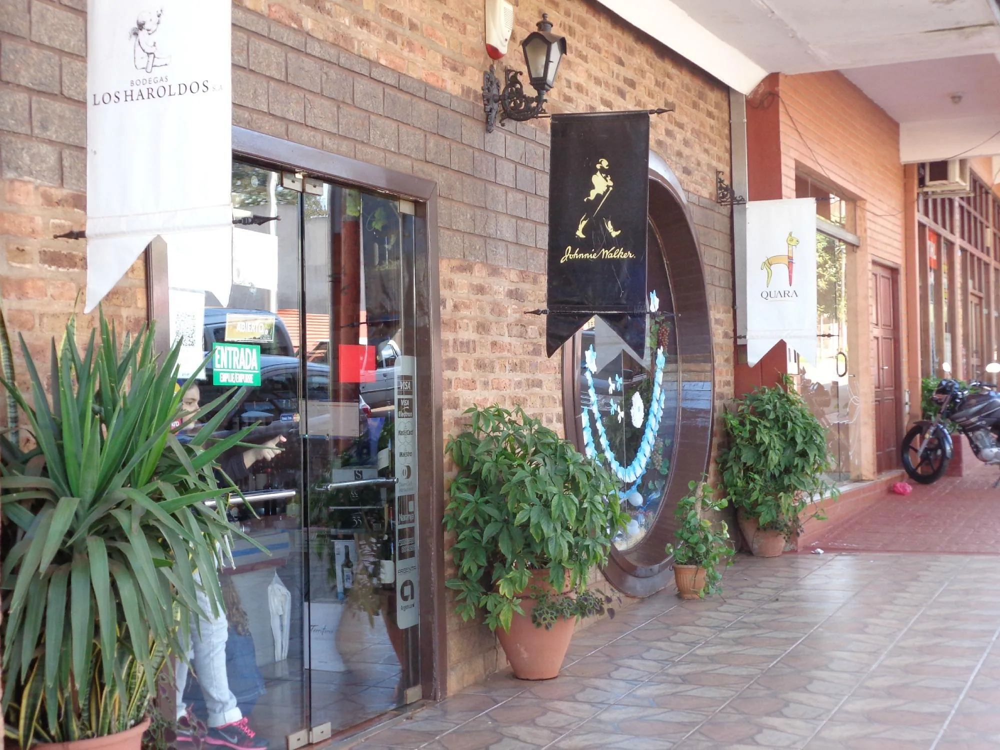
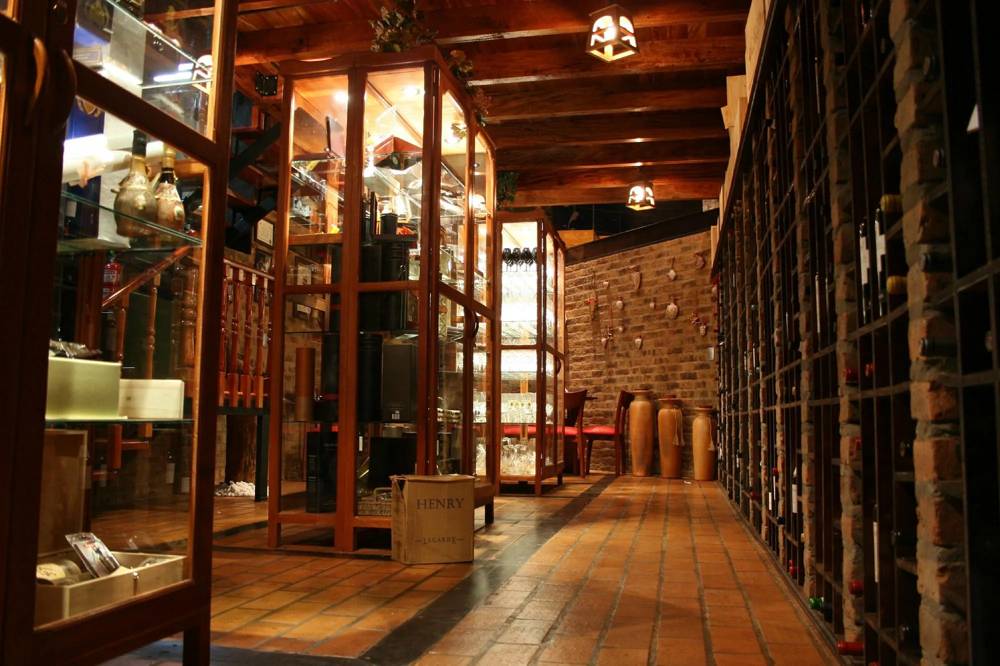
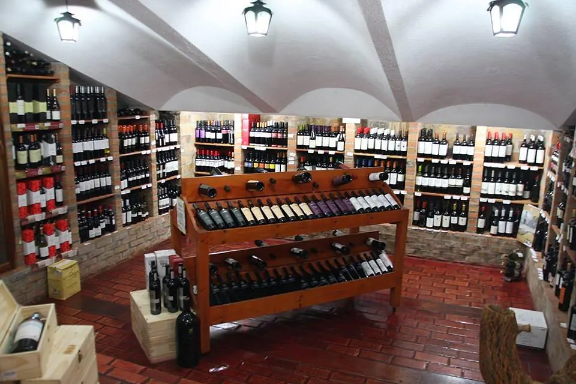

Puerto Iguazú · 3 FronterasLa Vinoteca de Don Jorge
Tienda de vinos, cervezas y licores“La Vinoteca de Don Jorge, la casa más completa para el aficionado al vino en las 3 Fronteras.”
Sitio Web Oficial
vinotecadonjorge.com.ar
Vinos, cervezas, licores y delicatessen · Puerto Iguazú↗
+54 3757-424283
Teléfono
Atendemos con horario extendido · Av. Rep. Argentina 188
01 / SHOWROOM
↗
Caja Cerrada
Precios especialesEspacio climatizado con exclusividades en vino, licor, cerveza y delicatessen.
02 / DESDE 2002
↗
Nuestra Historia
De Mendoza a la FronteraPrimera vinoteca especializada de Puerto Iguazú.
INSTAGRAM OFICIAL · 27,4 MIL SEGUIDORES
@lavinotecadedonjorge
5.385 publicaciones · Degustaciones, capacitaciones y etiquetas
03 / RESEÑAS
↗
Tripadvisor
N.º 1 en Iguazú231 opiniones y 51 fotos en Comida y bebida.
04 / GPS
↗
Cómo Llegar
Puerto IguazúAv. República Argentina 188, N3370 Misiones.
Propuestas del Showroom
En Av. Rep. Argentina 188Cada paladar tiene su región
Curaduría“Primero tenés que conocer tu paladar” — Laureano Giovanini
Patagonia
Para quienes prefieren vinos más suaves.
Nuestro Showroom & Cava
Interior, cava y etiquetas · Toca para ampliar
Showroom climatizado Salón Don Jorge
Salón Don Jorge

La Cava Estanterías
Estanterías
 Selección de Bodegas
Selección de Bodegas
 Etiquetas
Etiquetas
 Espumantes
Espumantes
 Vinos y Delicatessen
Vinos y Delicatessen
Horario de Atención
Verificando...
Lunes a sábado
08:30 a 22:00h
Domingo
09:00 a 13:00h · 16:00 a 20:00h
*Hora de Argentina · En días feriados el horario puede variar.
Puerto Iguazú · 3 Fronteras
N3370 MisionesAv. República Argentina 188 · Puerto Iguazú, Misiones, Argentina